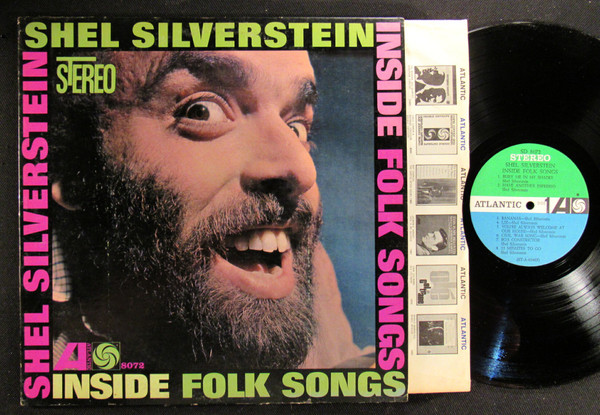
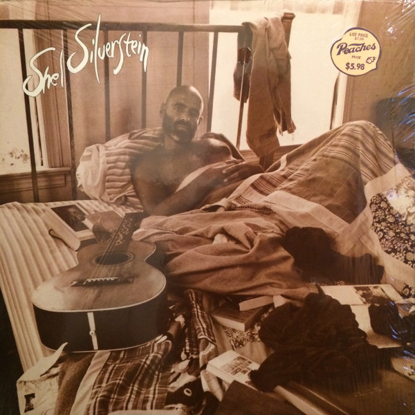
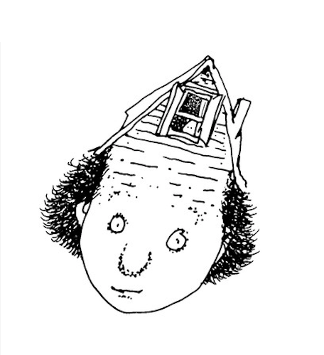

Poetry, Playwrights, & Music
Poetry Books
Playwrights:
The Lady or the Tiger
The Devil and Billy Markham
Oh, Hell!
Things Change

Albums:
Hairy Jazz
Inside Folk Songs
Shel Silverstein's Stag Party
Drain My Brain
Crouchin' on the Outside
The Great Conch Train Robbery
Silverstein studied music at Chicago College of Performing Arts at Roosevelt University. Silverstein composed original music for several films and displayed a musical versatility in these projects, playing guitar, piano, saxophone and trombone. He wrote songs, including “A Boy Named Sue” for Johnny Cash and “The Cover of the Rolling Stone,” sung by Dr. Hook.

A light in the attic:
There’s a light on in the attic.
Though the house is dark and shuttered,
I can see a flickerin’ flutter,
And I know what it’s about.
There’s a light on in the attic.
I can see it from the outside,
And I know you’re on the inside...lookin’ out

A picture from Silverstein's book: A Light in The Attic